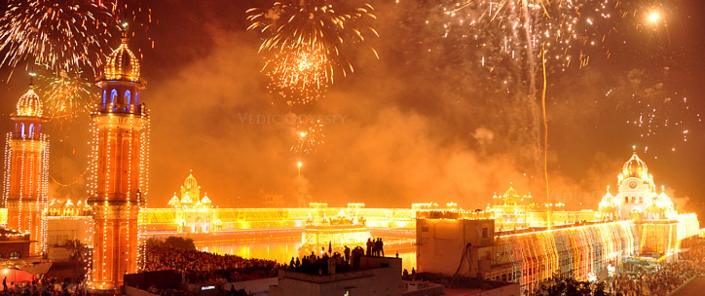
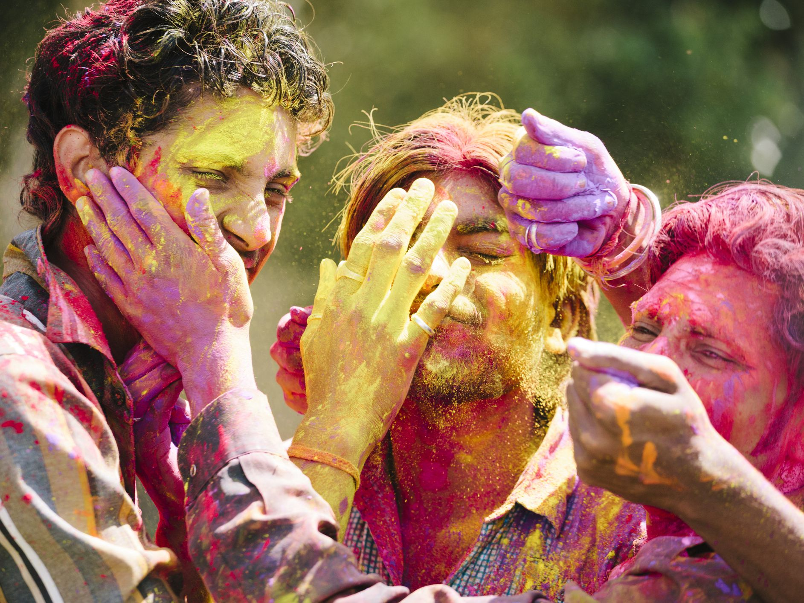
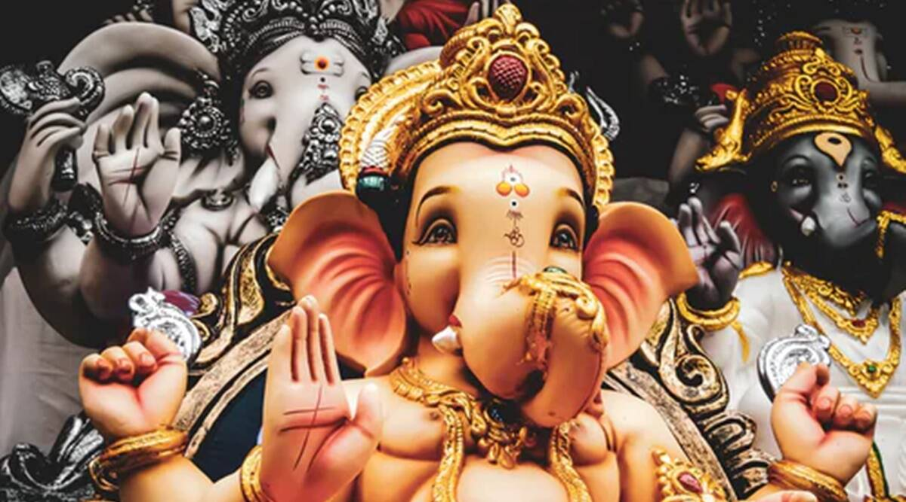
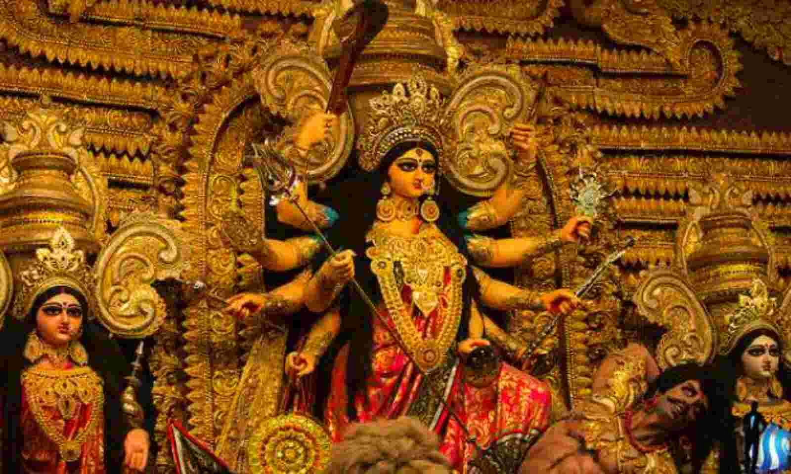

The spirit of India is expressed year-round in festivals as diverse as the country's landscapes and as lively as its people. Enthusiastic celebrations of gods and goddesses, saints and prophets, history, culture and the advent of new seasons occur almost daily throughout the country. By taking part in these colorful festivities, you will see the vitality of India today as it embraces the traditions of its fascinating past.
Some of them are listed below
Diwali

Diwali is a festival of lights. The festival usually lasts five days. One of the most popular festivals of Hinduism, Diwali symbolizes the spiritual "victory of light over darkness, good over evil, and knowledge over ignorance".The festival is widely associated with Lakshmi, goddess of prosperity, with many other regional traditions connecting the holiday to Sita and Rama, Vishnu, Krishna, Yama, Yami, Durga, Kali, Hanuman, Ganesha, Kubera, Dhanvantari, or Vishvakarman.
Holi

Holi is a popular ancient Indian festival, also known as the "Festival of Love", the "Festival of Colours" and the "Festival of Spring". The festival celebrates the eternal and divine love of Radha Krishna.It also signifies the triumph of good over the evil, as it celebrates the victory of Vishnu as Narasimha Narayana over Hiranyakashipu. It originated and is predominantly celebrated in India and Nepal but has also spread to other regions of Asia and parts of the Western world through the diaspora from the Indian subcontinent.Holi celebrations start on the night before Holi with a Holika Dahan where people gather, perform religious rituals in front of the bonfire, and pray that their internal evil be destroyed the way Holika, the sister of the demon king Hiranyakashipu, was killed in the fire.
Ganesh Chaturthi

Ganesh Chaturthi , also known as Vinayaka Chaturthi (Vināyaka Caturthī), or Vinayaka Chaviti (Vināyaka Cavitī) is a Hindu festival celebrating the arrival of Lord Ganesh to earth from Kailash Parvat with his mother Goddess Parvati/Gauri. The festival is marked with the installation of Lord Ganesh's clay murtis privately in homes and publicly by Shri Bal Gangadhar Tilak popularly known as Lokmanya Tilak in Pune in the year 1893 on elaborate pandals
Durga Puja

Durga Puja, also known as Durgotsava or Sharodotsava, is an annual Hindu festival originating in the Indian subcontinent which reveres and pays homage to the Hindu goddess Durga and is also celebrated because of Durga's victory over Mahishasur.